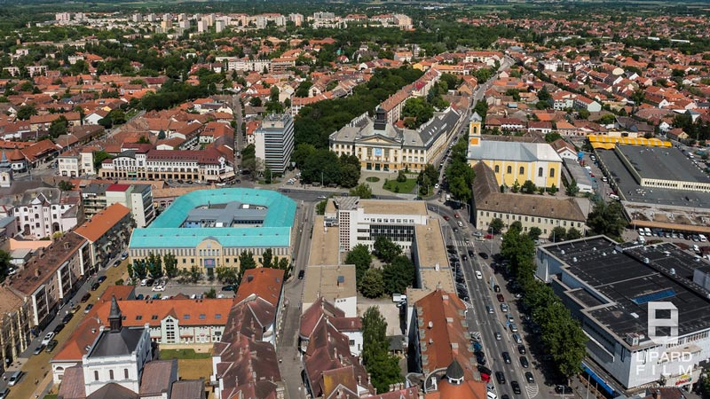
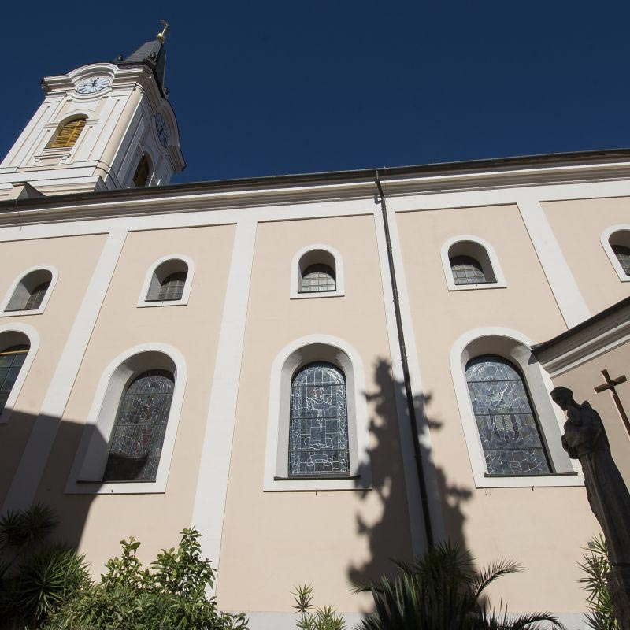
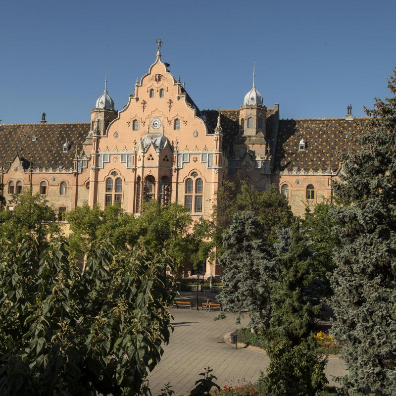
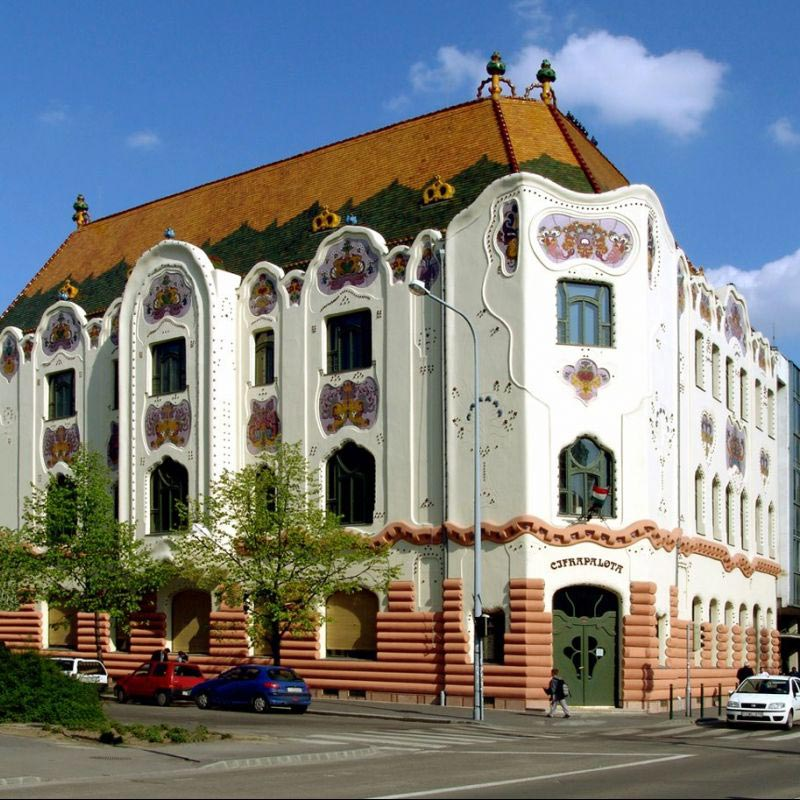
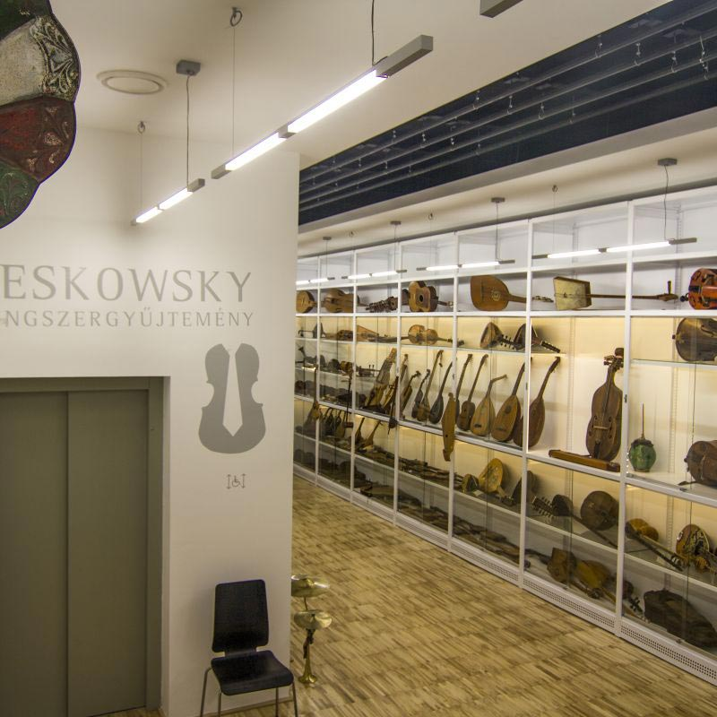
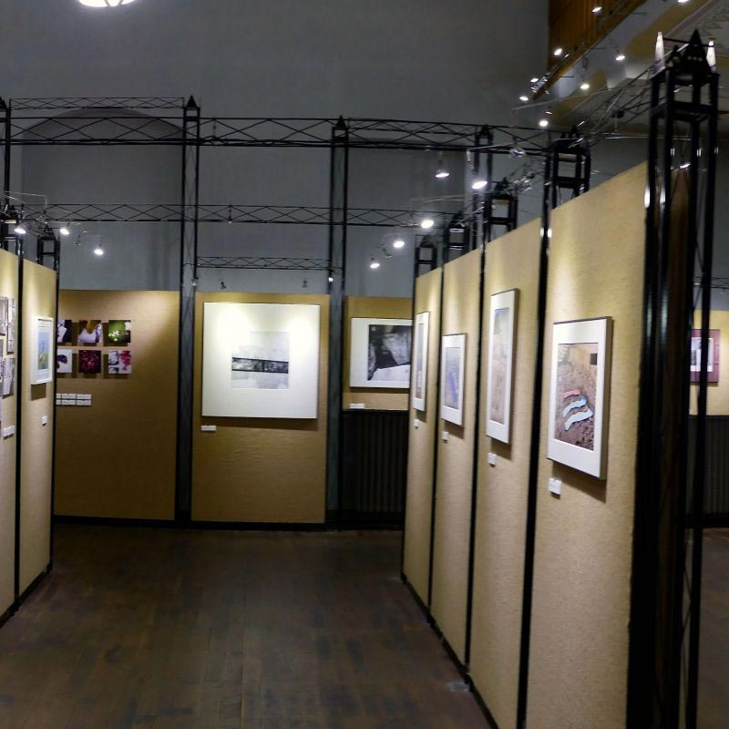
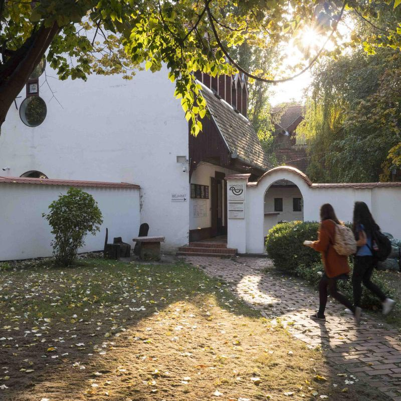

【美景】
凯奇凯梅特是匈牙利第八大城市。 凯奇凯梅特早在公元前3000年就已有人居住。 凯奇凯梅特是德国人和荷兰人特别喜欢的旅游胜地。 凯奇凯梅特的市政厅被称为“童话宫殿。 凯奇凯梅特华丽的宫殿是匈牙利新艺术运动中最美丽，最童话的建筑之一。 凯奇凯梅特有匈牙利唯一的乐器收藏馆。 凯奇凯梅特有匈牙利唯一的摄影博物馆。
【美食】
Goulash牛肉炖汤
Libamáj 鹅肝
Lángos特色油饼
Toltott Kaposzta 圆白菜肉丸
Halászlé 鱼汤
Ujhazi Tyukhuslevesi 家常老鸡汤
Kurtoskalacs 烟囱卷面包
Egri Bikavér埃格尔公牛血葡萄酒
凯奇凯梅特位于布达佩斯80公里的东南方向，是巴奇•基什孔州的首府，也是全国第八大城市，人口110687。早在公元前3000年就已有人居住。1368年，国王路易大帝的宪章将其称为城市。最著名的建筑物是“城市之屋”、“士兵之家”、“孤儿之家”。自1950年以来，是最大的县的所在地，并且是多瑙河和蒂萨河之间的区域中心之一。凯奇凯梅特是德国人和荷兰人特别喜欢的旅游胜地。每两年举行的凯奇凯梅特国际航空日也吸引了很多人。

景点：圣尼古拉斯教区教堂
圣尼古拉斯教区教堂建于19世纪下半叶。几个世纪以来，该教堂已进行了多次扩建和重建，并在各处保留了哥特式特色。目前基本上是十八世纪后期的巴洛克式建筑风格。庭院中的卢尔德岩石教堂始建于1930年代，现已成为真正的礼拜场所。

凯奇凯梅特的市政厅也被称为“童话宫殿”，它是1893-1897年建造的。这座宏伟的建筑建在“著名城市”的主广场上，将匈牙利、法国、英国文艺复兴时期的复杂风格融合在一起。大厅里的每件现代家具都是用手工制作的。


莱斯科夫斯基乐器收藏馆是该国唯一乐器收藏馆。收集了超过2000件作品，展示了从中世纪到今天的古典民间乐器。游客可以演奏来自五大洲的弦乐器、管乐器和打击乐器。

匈牙利摄影博物馆建于1890年。是匈牙利唯一的摄影博物馆。保存了匈牙利国内外超过一百万件的收藏品。当代和历史的照片、底片、机器、物体和文件。最古老的作品是1840年制成的双字。1918年东正教犹太社区购买了此博物馆，并转变为犹太教堂。

玩具博物馆保留了将近18,000件具有收藏价值的物品，包括古老的蜗牛玩具、简单的民间玩具、艺术品、匈牙利应用艺术的独特作品以及儿童书籍、各种玩具收藏和稀有书籍。
